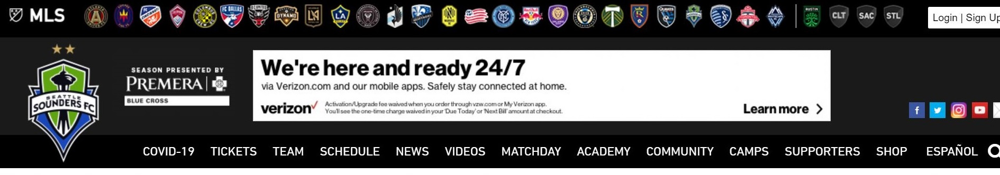
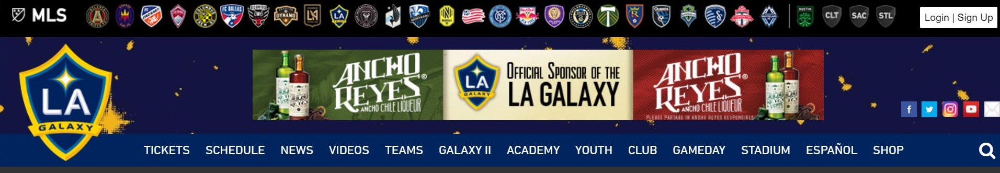
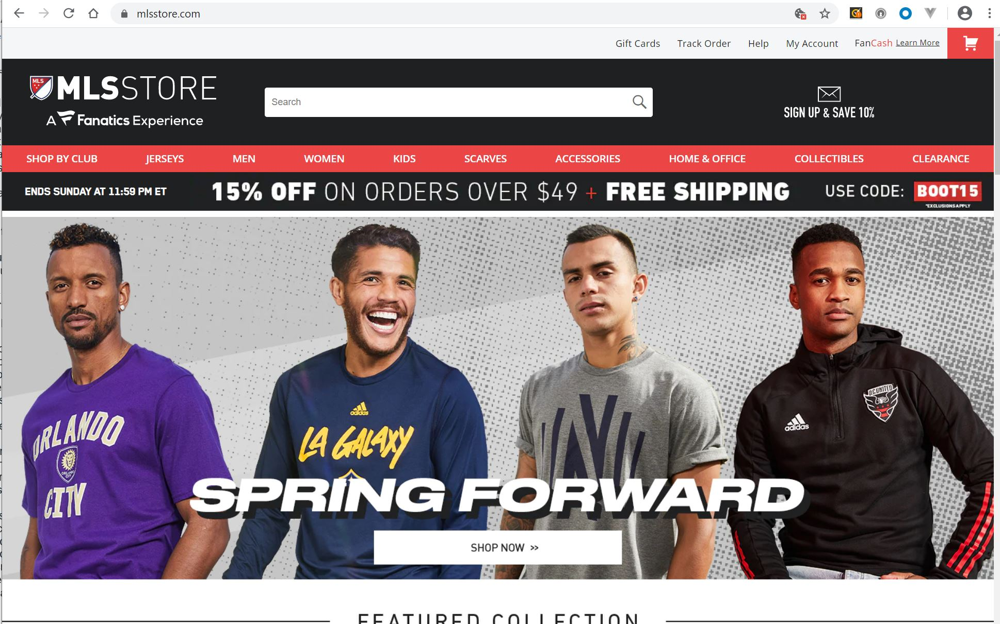
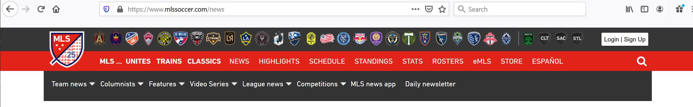
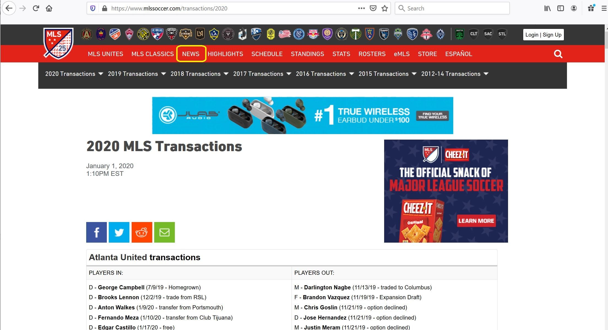
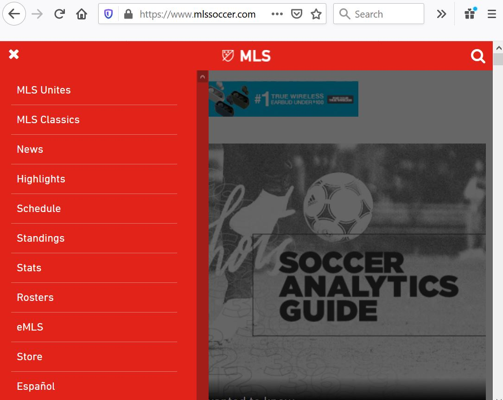
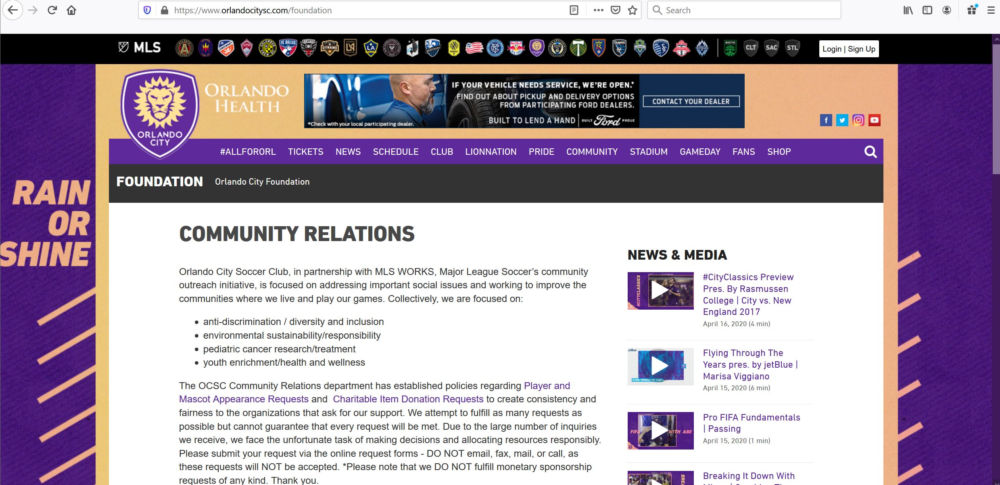
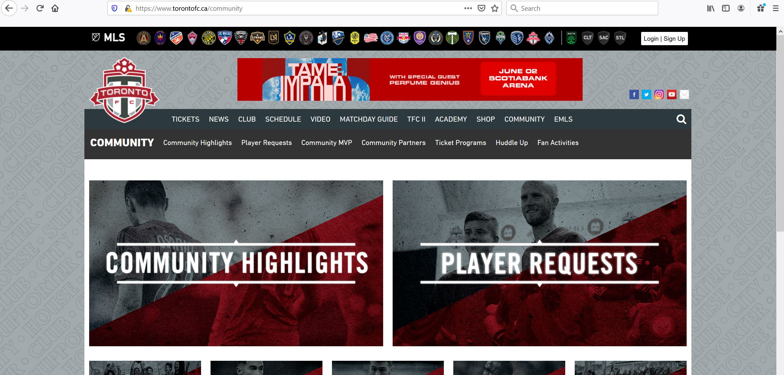
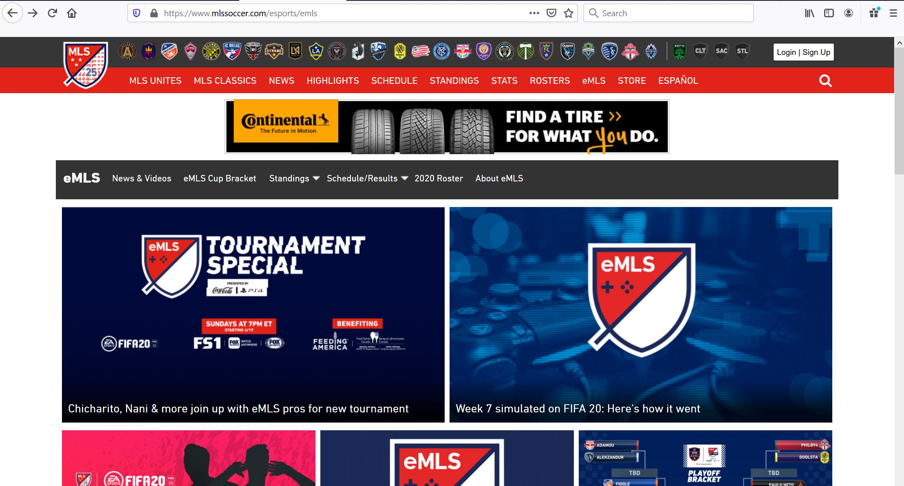
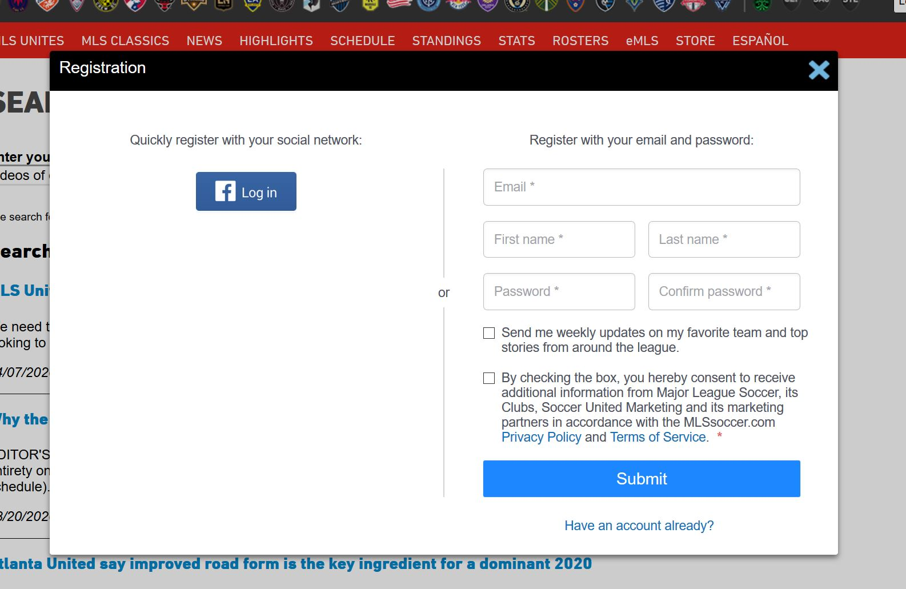

Usable Design Analysis for the Major League Soccer website
Major League Soccer (MLS) is a men's professional soccer league in the United States and Canada made of 26 teams. Its website is www.mlssoccer.com.
This post analyzes the website's design supports or detracts from its usability.
Criterion 1: Site consistency
What is working?
The topmost menu bar has the same links for the MLS page and all 26 of the team pages.There is a consistency in the navigation and layout across the MLS website and all 26 of the MLS team sites that creates a strong sense of family and connectedness among the teams of the league.
The cross team navigation header at the of the site is same across the MLS site and all team (except the expansion teams) pages. From this header, you can quickly jump from one team’s section to another’s.
 The second header location contains the team logo, an ad, and social media links.  Header sections for the Galaxy and Sounders teams have content and colors specific to each team.Underneath the shared navigation header, sub headers for each team site share the same layout with content and colors customized to each team. This shared layout makes it clear that the teams are part of the same MLS family.
Some pages, like Schedule, also follow same layout for the entire page across the teams. A user who is familiar with the Schedule page for their local team will have a similar experience on the Schedule page for other teams.
How could it improve?
 MLS store does not have a consistent header with the rest of the MLS soccer pages.The navigation consistency falls apart when you click on the “shop” link on any of the pages. This link takes users to a different website for the MLS store without any obvious links back to the MLS or Team pages. I think this would make more sense if the shop link either opened in a new tab to indicate that you are going to a new website or if it retained the topmost navigational header with links to each of the homepages to show that is still part of the same website.
Criterion 2: Are navigational elements clear?
What is working?
 Three levels of navigation menus on the MLS site.The navigational headers at the top of the site follow a logical hierarchical order:
- The topmost menu navigates across teams.
- The next menu navigates across sections of a team’s website.
- When needed, a 3rd menu navigates through subsections, as in the News section.
How could it improve?
 The transaction page does not have any visual ties back to the it's parent page of News.The navigation gets confusing on the pages for sub sections. For example, it’s not obvious where the Transactions page lives within the structure of the website. It would be helpful to see some sort of breadcrumbs illustrating the path to the current sub section page and to have the second navigation menu option associated with the page, “News” in this case, highlighted.
 The cross-team navigation menu is missing on smaller screens.Also, the topmost navigational menu disappears entirely when the screen gets smaller. I understand the challenge associated with displaying 31 links with a smaller screen size, but it feels inconsistent that the options to navigate across teams disappear entirely. Within this main navigational menu, I would like to see a link to a submenu or a page that lists all the teams within the MLS to maintain the continuity.
Criterion 3: Do I know what I'm looking at on each page?
What is working?
 The Orlando City Community page has a purple background.  The Toronto FC Community page has a gray background.The main logo and the color scheme change to differentiate between each of the team websites. For example, the bold purple makes it clear that I’m on the community page of the Orlando City team rather than one of the gray Toronto pages.
How could it improve?
 There is lots of content on the eMLS page, but what is eMLS?The site lets the content speak for itself without additional text. This works on many pages, like the Standings and Schedule where the tables of content are self-explanatory. On other pages, like the eMLS page, users could benefit from an explanation of what the content is. Here, a quick statement of what eMLS is would be helpful before diving into the articles and videos.
Criterion 4: Does the registration process motivate me to sign-up?
 The registration form allows users to use Facebook or create a new account.What is working?
There is an option to quickly register with a social network. With a Facebook login it would be very easy to also log-in to the MLS website
How could it improve?
I’m not sure why I would want to create a log-in. The registration form doesn’t provide much information on the benefits of creating a log-in, so it seems that the main effect of registering would be to get emails including marketing emails from unspecified partners. To encourage users to register with the MLS website, I would recommending providing personalized features that make it worthwhile to log into the site as well as a clear path to opt out of undesirable marketing.